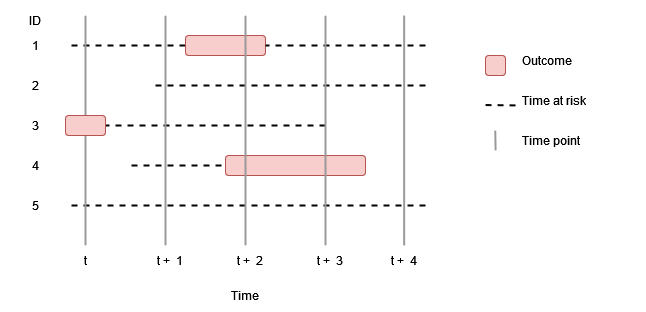
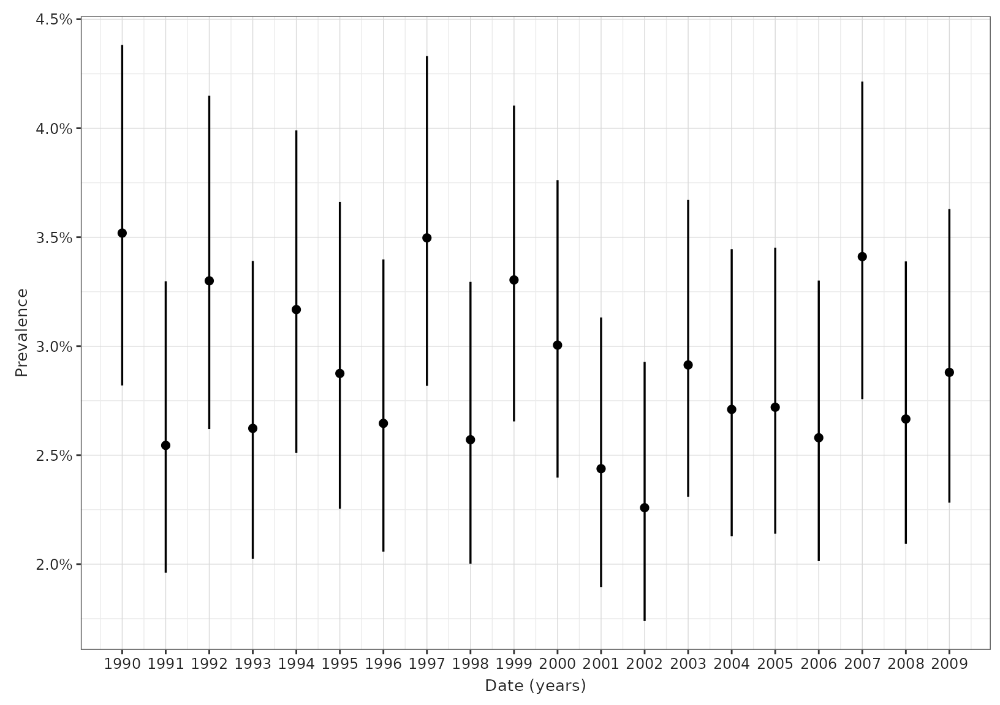

Calculating prevalence
a04_Calculating_prevalence.RmdIntroduction
Prevalence is the total number of people with an ongoing health-related event, such as a medical condition or medication use, at a particular time or during a given period divided by the population at risk. In the previous vignettes we have seen how we can identify a denominator population and define and instantiate an outcome cohort. Prevalence then can be calculated to describe the proportion of people in the denominator population who are in the outcome cohort at a specified time point (point prevalence) or over a given time interval (period prevalence).
In the first plot below, we can We can see at time t+2 that 2 out of 5 people were in an outcome cohort, giving a point prevalence of 40%. In the second figure, period prevalence between t+2 and t+3 was also 40%. However for period prevalence between t and t+1, what do we do with those people who only contributed some time during the period? If we included them we´ll have a period prevalence of 20%, whereas if we require that everyone is observed for the full period to contribute then we´ll have a period prevalence of 33%.


Outcome definition
General information on how to define outcome cohorts can be found in the vignette “Creating outcome cohorts”. The most important recommendations for defining an outcome cohort for calculating incidence are:
- Decide whether to restrict events to the first occurrence
- Set an appropriate cohort exit strategy
- Do not add further restrictions on sex, age and prior history
requirements. Theses can be specified when identifying the denominator
cohort using
generateDenominatorCohortSet().
Adequate use of the first two features above need to reflect the nature of the proposed outcome (e.g., whether it is an acute or chronic condition) and the research question being investigated.
Using estimatePointPrevalence() and estimatePeriodPrevalence()
estimatePointPrevalence() and
estimatePeriodPrevalence() are the functions we use to
estimate prevalence. To demonstrate its use, let´s load the
IncidencePrevalence package (along with a couple of packages to help for
subsequent plots) and generate 50,000 example patients using the
mockIncidencePrevalenceRef() function, from whom we´ll
create a denominator population without adding any restrictions other
than a study period.
library(IncidencePrevalence)
library(dplyr)
library(tidyr)
library(ggplot2)
cdm <- mockIncidencePrevalenceRef(
sampleSize = 50000,
outPre = 0.5
)
cdm$denominator <- generateDenominatorCohortSet(
cdm = cdm,
startDate = as.Date("2008-01-01"),
endDate = as.Date("2012-01-01"),
ageGroup = list(c(0, 150)),
sex = "Both",
daysPriorHistory = 0
)
cdm$denominator %>%
glimpse()
#> Rows: ??
#> Columns: 4
#> Database: DuckDB 0.6.2-dev1166 [unknown@Linux 5.15.0-1031-azure:R 4.2.2/:memory:]
#> $ cohort_definition_id <int> 1, 1, 1, 1, 1, 1, 1, 1, 1, 1, 1, 1, 1, 1, 1, 1, 1…
#> $ subject_id <chr> "2", "4", "6", "8", "12", "13", "21", "22", "24",…
#> $ cohort_start_date <date> 2008-01-01, 2011-04-26, 2011-10-13, 2008-01-01, …
#> $ cohort_end_date <date> 2008-08-03, 2011-07-16, 2012-01-01, 2008-04-12, …Using estimatePointPrevalence()
Let´s first calculate point prevalence on a yearly basis.
prev <- estimatePointPrevalence(
cdm = cdm,
denominatorTable = "denominator",
outcomeTable = "outcome",
interval = "Years",
minCellCount = 0
)
prev %>%
glimpse()
#> Rows: 5
#> Columns: 10
#> $ analysis_id <chr> "1", "1", "1", "1", "1"
#> $ prevalence_start_date <date> 2008-01-01, 2009-01-01, 2010-01-01, 2011-01-01, …
#> $ prevalence_end_date <date> 2008-01-01, 2009-01-01, 2010-01-01, 2011-01-01,…
#> $ n_cases <int> 26, 36, 39, 29, 31
#> $ n_population <int> 4442, 4646, 4655, 4664, 4667
#> $ prevalence <dbl> 0.005853219, 0.007748601, 0.008378088, 0.006217…
#> $ prevalence_95CI_lower <dbl> 0.003997601, 0.005602378, 0.006134944, 0.0043328…
#> $ prevalence_95CI_upper <dbl> 0.008562779, 0.010708169, 0.011431969, 0.0089155…
#> $ cohort_obscured <chr> "FALSE", "FALSE", "FALSE", "FALSE", "FALSE"
#> $ result_obscured <chr> "FALSE", "FALSE", "FALSE", "FALSE", "FALSE"
prev %>%
ggplot(aes(x = prevalence_start_date, y = prevalence,
ymin = prevalence_95CI_lower,
ymax = prevalence_95CI_upper)) +
geom_point() +
geom_errorbar(width = 0) +
scale_y_continuous(
labels = scales::percent,
limits = c(0, NA)
) +
theme_minimal()
We can also calculate point prevalence by calendar month.
prev <- estimatePointPrevalence(
cdm = cdm,
denominatorTable = "denominator",
outcomeTable = "outcome",
interval = "Months",
minCellCount = 0
)
prev %>%
glimpse()
#> Rows: 49
#> Columns: 10
#> $ analysis_id <chr> "1", "1", "1", "1", "1", "1", "1", "1", "1", "1"…
#> $ prevalence_start_date <date> 2008-01-01, 2008-02-01, 2008-03-01, 2008-04-01,…
#> $ prevalence_end_date <date> 2008-01-01, 2008-02-01, 2008-03-01, 2008-04-01,…
#> $ n_cases <int> 26, 22, 37, 32, 26, 31, 31, 30, 32, 31, 22, 27, …
#> $ n_population <int> 4442, 4450, 4459, 4486, 4495, 4543, 4555, 4559, …
#> $ prevalence <dbl> 0.005853219, 0.004943820, 0.008297825, 0.0071333…
#> $ prevalence_95CI_lower <dbl> 0.003997601, 0.003267167, 0.006026191, 0.0050575…
#> $ prevalence_95CI_upper <dbl> 0.008562779, 0.007474450, 0.011415938, 0.0100524…
#> $ cohort_obscured <chr> "FALSE", "FALSE", "FALSE", "FALSE", "FALSE", "FA…
#> $ result_obscured <chr> "FALSE", "FALSE", "FALSE", "FALSE", "FALSE", "FA…
prev %>%
ggplot(aes(x = prevalence_start_date, y = prevalence,
ymin = prevalence_95CI_lower,
ymax = prevalence_95CI_upper)) +
geom_point() +
geom_errorbar(width = 0) +
scale_y_continuous(
labels = scales::percent,
limits = c(0, NA)
) +
theme_minimal()
By using the estimatePointPrevalence() function, we can further specify where to compute point prevalence in each time interval (start, middle, end). By default, this parameter is set to start. But we can use middle instead like so:
prev <- estimatePointPrevalence(
cdm = cdm,
denominatorTable = "denominator",
outcomeTable = "outcome",
interval = "Years",
timePoint = "middle",
minCellCount = 0
)
prev %>%
glimpse()
#> Rows: 4
#> Columns: 10
#> $ analysis_id <chr> "1", "1", "1", "1"
#> $ prevalence_start_date <date> 2008-07-01, 2009-07-01, 2010-07-01, 2011-07-01
#> $ prevalence_end_date <date> 2008-07-01, 2009-07-01, 2010-07-01, 2011-07-01
#> $ n_cases <int> 31, 35, 41, 26
#> $ n_population <int> 4555, 4573, 4752, 4716
#> $ prevalence <dbl> 0.006805708, 0.007653619, 0.008627946, 0.0055131…
#> $ prevalence_95CI_lower <dbl> 0.004798807, 0.005508445, 0.006366557, 0.003765…
#> $ prevalence_95CI_upper <dbl> 0.009643779, 0.010625271, 0.011683132, 0.008066…
#> $ cohort_obscured <chr> "FALSE", "FALSE", "FALSE", "FALSE"
#> $ result_obscured <chr> "FALSE", "FALSE", "FALSE", "FALSE"
prev %>%
ggplot(aes(x = prevalence_start_date, y = prevalence,
ymin = prevalence_95CI_lower,
ymax = prevalence_95CI_upper)) +
geom_point() +
geom_errorbar(width = 0) +
scale_y_continuous(
labels = scales::percent,
limits = c(0, NA)
) +
theme_minimal()
Using estimatePeriodPrevalence()
To calculate period prevalence by year (i.e. each period is a calendar year)
prev <- estimatePeriodPrevalence(
cdm = cdm,
denominatorTable = "denominator",
outcomeTable = "outcome",
interval = "Years",
minCellCount = 0
)
prev %>%
glimpse()
#> Rows: 4
#> Columns: 10
#> $ analysis_id <chr> "1", "1", "1", "1"
#> $ prevalence_start_date <date> 2008-01-01, 2009-01-01, 2010-01-01, 2011-01-01
#> $ prevalence_end_date <date> 2008-12-31, 2009-12-31, 2010-12-31, 2011-12-31
#> $ n_cases <int> 1696, 1739, 1715, 1734
#> $ n_population <int> 7926, 7953, 8060, 8016
#> $ prevalence <dbl> 0.2139793, 0.2186596, 0.2127792, 0.2163174
#> $ prevalence_95CI_lower <dbl> 0.2050903, 0.2097124, 0.2039821, 0.2074411
#> $ prevalence_95CI_upper <dbl> 0.2231454, 0.2278785, 0.2218499, 0.2254654
#> $ cohort_obscured <chr> "FALSE", "FALSE", "FALSE", "FALSE"
#> $ result_obscured <chr> "FALSE", "FALSE", "FALSE", "FALSE"
prev %>%
ggplot(aes(x = prevalence_start_date, y = prevalence,
ymin = prevalence_95CI_lower,
ymax = prevalence_95CI_upper)) +
geom_point() +
geom_errorbar(width = 0) +
scale_y_continuous(
labels = scales::percent,
limits = c(0, NA)
) +
theme_minimal()
To calculate period prevalence by month (i.e. each period is a calendar month)
prev <- estimatePeriodPrevalence(
cdm = cdm,
denominatorTable = "denominator",
outcomeTable = "outcome",
interval = "Months",
minCellCount = 0
)
prev %>%
glimpse()
#> Rows: 48
#> Columns: 10
#> $ analysis_id <chr> "1", "1", "1", "1", "1", "1", "1", "1", "1", "1"…
#> $ prevalence_start_date <date> 2008-01-01, 2008-02-01, 2008-03-01, 2008-04-01,…
#> $ prevalence_end_date <date> 2008-01-31, 2008-02-29, 2008-03-31, 2008-04-30,…
#> $ n_cases <int> 154, 147, 167, 181, 178, 152, 163, 193, 153, 163…
#> $ n_population <int> 4733, 4706, 4761, 4759, 4797, 4822, 4840, 4859, …
#> $ prevalence <dbl> 0.03253750, 0.03123672, 0.03507666, 0.03803320, …
#> $ prevalence_95CI_lower <dbl> 0.02784982, 0.02663631, 0.03021435, 0.03296083, …
#> $ prevalence_95CI_upper <dbl> 0.03798338, 0.03660180, 0.04068863, 0.04385077, …
#> $ cohort_obscured <chr> "FALSE", "FALSE", "FALSE", "FALSE", "FALSE", "FA…
#> $ result_obscured <chr> "FALSE", "FALSE", "FALSE", "FALSE", "FALSE", "FA…
prev %>%
ggplot(aes(x = prevalence_start_date, y = prevalence,
ymin = prevalence_95CI_lower,
ymax = prevalence_95CI_upper)) +
geom_point() +
geom_errorbar(width = 0) +
scale_y_continuous(
labels = scales::percent,
limits = c(0, NA)
) +
theme_minimal()
When using the estimatePeriodPrevalence() function, we can set the fullContribution parameter to decide whether individuals are required to be present in the database throughout the interval of interest in order to be included (fullContribution=TRUE). If not, individuals will only be required to be present for one day of the interval to contribute (fullContribution=FALSE), which would be specified like so:
prev <- estimatePeriodPrevalence(
cdm = cdm,
denominatorTable = "denominator",
outcomeTable = "outcome",
interval = "Months",
fullContribution = FALSE,
minCellCount = 0
)
prev %>%
glimpse()
#> Rows: 48
#> Columns: 10
#> $ analysis_id <chr> "1", "1", "1", "1", "1", "1", "1", "1", "1", "1"…
#> $ prevalence_start_date <date> 2008-01-01, 2008-02-01, 2008-03-01, 2008-04-01,…
#> $ prevalence_end_date <date> 2008-01-31, 2008-02-29, 2008-03-31, 2008-04-30,…
#> $ n_cases <int> 154, 147, 167, 181, 178, 152, 163, 193, 153, 163…
#> $ n_population <int> 4733, 4706, 4761, 4759, 4797, 4822, 4840, 4859, …
#> $ prevalence <dbl> 0.03253750, 0.03123672, 0.03507666, 0.03803320, …
#> $ prevalence_95CI_lower <dbl> 0.02784982, 0.02663631, 0.03021435, 0.03296083, …
#> $ prevalence_95CI_upper <dbl> 0.03798338, 0.03660180, 0.04068863, 0.04385077, …
#> $ cohort_obscured <chr> "FALSE", "FALSE", "FALSE", "FALSE", "FALSE", "FA…
#> $ result_obscured <chr> "FALSE", "FALSE", "FALSE", "FALSE", "FALSE", "FA…
prev %>%
ggplot(aes(x = prevalence_start_date, y = prevalence,
ymin = prevalence_95CI_lower,
ymax = prevalence_95CI_upper)) +
geom_point() +
geom_errorbar(width = 0) +
scale_y_continuous(
labels = scales::percent,
limits = c(0, NA)
) +
theme_minimal()
Other parameters
For both functions, we can also specify a look-back window to consider an outcome as prevalent if it was ongoing in some previous amount of days relative to the current time point/ period. If NULL, any prior outcome will be considered prevalent. If 0, only ongoing outcomes will be considered prevalent. This can be a useful option if, for example, outcome cohorts simply included people only for the day in which a relevant code was seen and prevalence is to be based on some prior time window (e.g. including outcomes as prevalent if they were seen in the last 30 days).
prev <- estimatePointPrevalence(
cdm = cdm,
denominatorTable = "denominator",
outcomeTable = "outcome",
interval = "Years",
outcomeLookbackDays = c(0, 30),
minCellCount = 0
)
prev %>%
glimpse()
#> Rows: 10
#> Columns: 10
#> $ analysis_id <chr> "1", "1", "1", "1", "1", "2", "2", "2", "2", "2"
#> $ prevalence_start_date <date> 2008-01-01, 2009-01-01, 2010-01-01, 2011-01-01, …
#> $ prevalence_end_date <date> 2008-01-01, 2009-01-01, 2010-01-01, 2011-01-01,…
#> $ n_cases <int> 26, 36, 39, 29, 31, 136, 145, 167, 147, 151
#> $ n_population <int> 4442, 4646, 4655, 4664, 4667, 4442, 4646, 4655,…
#> $ prevalence <dbl> 0.005853219, 0.007748601, 0.008378088, 0.0062178…
#> $ prevalence_95CI_lower <dbl> 0.003997601, 0.005602378, 0.006134944, 0.0043328…
#> $ prevalence_95CI_upper <dbl> 0.008562779, 0.010708169, 0.011431969, 0.0089155…
#> $ cohort_obscured <chr> "FALSE", "FALSE", "FALSE", "FALSE", "FALSE", "FA…
#> $ result_obscured <chr> "FALSE", "FALSE", "FALSE", "FALSE", "FALSE", "FA…
prev %>%
left_join(attributes(prev)$settings) %>%
mutate(analysis_outcome_lookback_days = as.character(analysis_outcome_lookback_days)) %>%
ggplot(aes(x = prevalence_start_date, y = prevalence,
ymin = prevalence_95CI_lower,
ymax = prevalence_95CI_upper,
colour = analysis_outcome_lookback_days)) +
geom_point() +
geom_errorbar(width = 0) +
scale_y_continuous(
labels = scales::percent,
limits = c(0, NA)
) +
theme_minimal()
In the examples above, we have used calculated prevalence by months and years, but it can be also calculated by weeks, months or for the entire time period observed (overall). In addition, the user can decide whether to include time intervals that are not fully captured in the database (e.g., having data up to June for the last study year when computing period prevalence rates). By default, incidence will only be estimated for those intervals where the database captures all the interval (completeDatabaseIntervals=TRUE).
Given that we can set estimtePointPrevalence() and
estimtePeriorPrevalence() to exclude individuals based on
certain parameters (e.g., fullContribution), it is important to note
that the denominator population used to compute prevalence rates might
differ from the one calculated with
generateDenominatorCohortSet().
The user can also set the minimum number of events to be reported, below which results will be obscured. By default, results with <5 occurrences are blinded, but if minCellCount=0, all results will be reported. 95 % confidence intervals are calculated using the Wilson Score method. In addition, we can set verbose=TRUE to report progress as code is running. By default, no progress is reported (verbose=FALSE).
Output
estimtePointPrevalence() and
estimtePeriorPrevalence() will generate a table with point
and period prevalence rates for each of the time intervals studied and
for each combination of the parameters set, respectively. Similar to the
output obtained by generateDenominatorCohortSet(), the
table generated will also include attributes, including tibbles with
information on settings and attrition.
prev <- estimatePeriodPrevalence(
cdm = cdm,
denominatorTable = "denominator",
outcomeTable = "outcome",
interval = "Years",
fullContribution = c(TRUE, FALSE),
minCellCount = 0,
returnParticipants = TRUE
)
settings(prev)
#> # A tibble: 2 × 18
#> analysis_id outcome_…¹ outco…² analy…³ analy…⁴ analy…⁵ analy…⁶ analy…⁷ analy…⁸
#> <chr> <chr> <lgl> <dbl> <chr> <chr> <lgl> <chr> <lgl>
#> 1 1 1 NA 0 period years TRUE start TRUE
#> 2 2 1 NA 0 period years TRUE start FALSE
#> # … with 9 more variables: analysis_min_cell_count <dbl>,
#> # denominator_cohort_id <int>, denominator_age_group <chr>,
#> # denominator_sex <chr>, denominator_days_prior_history <dbl>,
#> # denominator_start_date <date>, denominator_end_date <date>,
#> # denominator_strata_cohort_definition_id <lgl>,
#> # denominator_strata_cohort_name <lgl>, and abbreviated variable names
#> # ¹outcome_cohort_id, ²outcome_cohort_name, …
attrition(prev)
#> # A tibble: 22 × 5
#> current_n reason exclu…¹ step analy…²
#> <dbl> <glue> <dbl> <chr> <chr>
#> 1 50000 Starting population NA Gene… 1
#> 2 50000 Missing year of birth 0 Gene… 1
#> 3 50000 Missing sex 0 Gene… 1
#> 4 50000 Cannot satisfy age criteria during the study… 0 Gene… 1
#> 5 18018 No observation time available during study p… 31982 Gene… 1
#> 6 18018 Doesn't satisfy age criteria during the stud… 0 Gene… 1
#> 7 18018 Prior history requirement not fulfilled duri… 0 Gene… 1
#> 8 18018 No observation time available after applying… 0 Gene… 1
#> 9 18018 Starting analysis population NA Esti… 1
#> 10 18014 Not observed during the complete database in… 4 Esti… 1
#> # … with 12 more rows, and abbreviated variable names ¹excluded, ²analysis_idIn addition, if we set returnParticipants as TRUE as above, we can identify the individuals who contributed to the prevalence rate analysis by using `participants(), along with the start and end date of their contribution.
participants(prev)
#> $study_population_analyis_1
#> # Source: SQL [?? x 6]
#> # Database: DuckDB 0.6.2-dev1166 [unknown@Linux 5.15.0-1031-azure:R 4.2.2/:memory:]
#> analysis_id subject_id cohort_start_date cohort_end_d…¹ outcome_…² outcome_…³
#> <chr> <chr> <date> <date> <date> <date>
#> 1 1 24 2010-10-31 2012-01-01 2011-11-29 2011-12-05
#> 2 1 30 2009-09-16 2011-06-24 2010-04-01 2010-04-07
#> 3 1 145 2008-12-26 2010-05-16 2010-04-01 2010-04-07
#> 4 1 184 2008-11-04 2010-04-16 2008-12-09 2008-12-15
#> 5 1 263 2008-06-25 2010-04-01 2008-08-21 2008-08-27
#> 6 1 271 2008-01-01 2010-03-27 2008-10-16 2008-10-22
#> 7 1 272 2009-05-28 2011-06-09 2009-08-23 2009-08-29
#> 8 1 298 2009-08-05 2012-01-01 2010-11-30 2010-12-06
#> 9 1 335 2008-09-30 2011-02-15 2010-07-10 2010-07-16
#> 10 1 342 2008-11-28 2011-05-25 2010-11-22 2010-11-28
#> # … with more rows, and abbreviated variable names ¹cohort_end_date,
#> # ²outcome_start_date, ³outcome_end_date
#>
#> $study_population_analyis_2
#> # Source: SQL [?? x 6]
#> # Database: DuckDB 0.6.2-dev1166 [unknown@Linux 5.15.0-1031-azure:R 4.2.2/:memory:]
#> analysis_id subject_id cohort_start_date cohort_end_d…¹ outcome_…² outcome_…³
#> <chr> <chr> <date> <date> <date> <date>
#> 1 2 2 2008-01-01 2008-08-03 2008-04-18 2008-04-24
#> 2 2 8 2008-01-01 2008-04-12 2007-08-25 2007-08-31
#> 3 2 21 2011-06-06 2012-01-01 2013-01-12 2013-01-18
#> 4 2 24 2010-10-31 2012-01-01 2011-11-29 2011-12-05
#> 5 2 30 2009-09-16 2011-06-24 2010-04-01 2010-04-07
#> 6 2 34 2008-01-01 2008-12-19 2008-11-09 2008-11-15
#> 7 2 35 2010-06-21 2010-06-30 2010-06-29 2010-07-05
#> 8 2 46 2008-01-01 2008-05-05 2006-12-25 2006-12-31
#> 9 2 80 2010-11-11 2010-11-12 2010-11-12 2010-11-18
#> 10 2 89 2011-01-10 2012-01-01 2011-03-14 2011-03-20
#> # … with more rows, and abbreviated variable names ¹cohort_end_date,
#> # ²outcome_start_date, ³outcome_end_dateWe can find the median year of cohort entry of those people contributing to analysis 1 for example by
participants(prev, analysisId = 1) %>%
summarise(median_start = median(year(cohort_start_date)))
#> # Source: SQL [1 x 1]
#> # Database: DuckDB 0.6.2-dev1166 [unknown@Linux 5.15.0-1031-azure:R 4.2.2/:memory:]
#> median_start
#> <dbl>
#> 1 2008